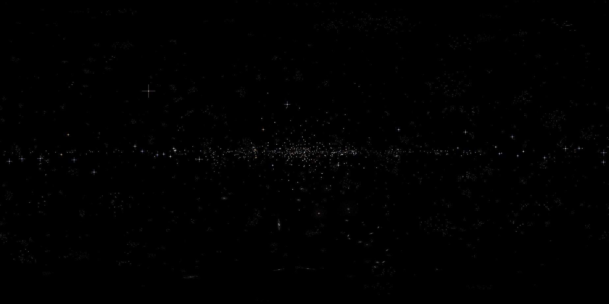

Simulated Universe



Preferably, use this link to the GitHub repository
About
As part of the University of Queensland course PHYS3080 - Extragalactic Astrophysics and Cosmology, we students were given data from a simulated universe (programmed by the course staff) to create an astronomical distance ladder. Both the data analysis and the simulation itself fascinated me, so I'd decided to try my hand at emulating the simulation myself. While some aspects in this simulation aren't as polished as the data we were given as students, some new features have been added, and others extended. I'm really happy with the results so far, and I aim to work on it and tweak the code for a while to come.
As python is the language I'm most capable in, this project is written entirely in python. Several packages were used extensively, including but not limited to: numpy, matplotlib, pandas, multiprocessing, and scipy.
How to use the Program
Unless you intend to see the inner workings of the sim, the only file you would need to open is MainSimulationFile.py. To create a new dataset, just open this in your Python IDE of choice (or even just double click!), and run the program. This will create a new dataset in the "Datasets" folder, with a naming convention of "Sim Data (Clusters; {pop}, Seed; {seed})", where pop is the number of clusters and the seed parameter is just the seed for the random number generating in the program. Once the dataset is created, you can head over to the Datasets directory and take the .txt files within to analyse that universe!
Extent of Simulation
Several real aspects of astronomy are modelled (to varying degrees of accuracy) in this simulation. Below is a non-exhaustive list of the physical properties that could, in theory, be derived via quantitative and qualitative means from the output data .txt files. In the likely case that I can't follow that theme, the dot points show what and how some things were simulated.
Stars

- Four distinct classes of stars are generated: Main Sequence, Giants, Supergiants, and White Dwarfs. They can be see on the HR diagram on the right in their usual positions.
- Main sequence stars are generated realistically according to luminosity-mass functions (with the mass first randomly generated via a gamma distribution), and then the radius generated according to mass-radius relations. The temperature is then solved via the Stefan-Boltzmann equation. I am quite happy with the behaviour of the MS stars!
- White dwarf mass distributions were generated according to a published paper on the topic. Radius was then generated by the $R \sim M^{1/3}$ relation and temperature derived from wikipedia data. The luminosity then was taken via the Stefan-Boltzmann law.
- The giant and supergiant parameter generation was far less realistic and was artificially chosen to give nice looking data on a HR diagram.

- Star emission is modelled accurately according to blackbody curves, with their temperature and luminosity impacting the shape and height of the curve as expected. As part of the data output, monochromatic luminosity data is exported for each star in wavelengths 440nm, 500nm and 700nm (roughly the B, V, and R bands respectively).

- Some populations of stars, depending on their position on the HR diagram, will have variable light curves. The simulation will determine whether to have two or three distinct variable populations, with a "short" (18-30 hour) period and a "long" (45-60 hour period) being certain. A "longest" (75-100 hour) period class of variable has a 1/3 chance of being generated too. Each of these classes of variables are shown as triangles in the HR diagram above, with the top population being the short period, the rightmost population being the longest period, and the bottom left being the long period.
- The lightcurve of variable stars is randomly chosen out of a Sine, Triangle, or Sawtooth wave, with some random scatter added onto the 'normalised flux'.
- The period-luminosity relation (linear trend on a logY-x scale) has a randomly assigned sign with a random gradient within some small range of the desired parameters. This is generated at the universe level in
Universe.py.
Galaxies


- Classification of galaxy types. cD, E0-7, S0 and Sa-c, SBa-c galaxy types are simulated to a reasonable degree of accuracy (but mostly to be a bit pretty and to break up monotony in galaxies).
- Different star populations are found throughout galaxies. In spirals, the bulge/bar has lower mass, redder stars. The leading edges of spirals have high mass blue stars, with lower mass redder stars trailing the leading edges. There are also a population of even lower mass stars (on average) not associated with spirals. Elliptical galaxies are characterised by many more, lower mass red stars.


(L) Black hole with no dark matter (C) Black hole with dark matter (R) No black hole with dark matter
- Rotation curves are simulated accurately according to newtonian physics, with black holes and dark matter (via the Navarro-Frenk-White profile) influencing rotation velocities. Spiral galaxies have coherent rotation, with all stars (except the central black hole cluster) orbiting in the orbital plane in the same direction. Elliptical galaxies have random velocity directions, but velocity magnitudes according to the same rotation curve profiles. This random velocity is really apparent in the doppler image below in the Galaxy Clusters section.

Black Holes


- Massive black holes (usually on the order of 50-500 solar masses) are generated at the center of all/most galaxies with the mass dependent on the galaxy mass as a whole.
- Black holes all have a luminosity on the order of the eddington luminosity for a black hole of that mass. The actual proportion of $L_\text{edd}$ depends on how many stars are in a dense cluster around the black hole.
- Mock 'Radio Lobes' from black hole accretion shoot out from the 'poles' of the galaxy (which assumes that the accretion disk is parallel with the plane of the galaxy). cD galaxies display Fanaroff-Riley Type I lobes (L), while other galaxies show FRII lobes (R). Lobes generate if the central BH has a luminosity of more than $10^6 L_\odot$. At the moment, there is no use for this other than qualitative means.
- Black holes have a cluster of massive stars around them (according to an exponential distribution, where ellipticals will have more stars), with random velocity directions. In the unlikely case you can actually see the black hole in an output image, it shows up as a dot with an aqua-ish colour (according to the blackbody colours link in the credits).
Galaxy Clusters


(L) A slightly more populous-than-average galaxy cluster. (R) The radial velocities of galaxies within a cluster (red moving away).
- Galaxy clusters generate at least one galaxy according to an exponential distribution with a mean of 8 galaxies. Clusters with 5 or more galaxies will have an elliptical galaxy at their center, and clusters with 10 or more galaxies will have a cD galaxy in their center.
- Elliptical galaxies are much more common close to the center of clusters. Conversely, spirals are more likely on the outer edges of clusters.
- Using a similar approach to that of galaxy rotation curves, galaxies have a rotation velocity about the cluster center in a random direction (much similar to the method used for elliptical galaxies!)
The Universe as a whole

- Hubble recession is modelled, with more distant galaxies receeding further away. The hubble constant itself is chosen as a value between 1000 and 5000km/s/Mpc, with a random sign.
- Radial velocities of resolved stars take into account hubble recession, galaxy movement within clusters, and star movement within galaxies.
- In output visual images of the universe (see the top of this readme!), stars have diffraction spikes according to how bright they appear to the observer. Why? Because this is pretty and I like it.
- Type Ia supernova are randomly exploded across ~55 or so galaxies in the universe, with at least two of them being in the local cluster of galaxies so that the user may more easily find the intrinsic brightness.
- Homogeneous and inhomogeneous universes (inhomo by default) are able to be generated. Homogeneous has spherically-uniformly distributed galaxies, while inhomogeneous has exponentially increasing cluster counts up to a threshold of 30kpc (this is where normal galaxies are no longer generated and the 'distant galaxies' are now generated), where cluster count then exponentially decreases towards the radius of the universe.
To-Do:
- [ ] Make this damn README.md prettier!!
- [x] Include a 'how to use' section in this readme (thanks saskia!)
- [x] Fill out many docstrings and comment all code to a degree readable by other users.
Credits/Acknowledgements
- Saskia for providing a mental amount of help with regards to Python programming. I've learnt a lot! Also many many sanity checks and FEEDBACK. Mamma mia.
- Ciaran for helping with a bit of math (linear algebra is hard) and some astro sanity checks here and there.
- The
blackbodycolours.txtfile was supplied free of charge by Mitchell Charity (email) from What colour is a blackbody? (Version 2001-Jun-22) - The astrophysics team at the University of Queensland for providing inspiration for this project in the form of their simulation data!